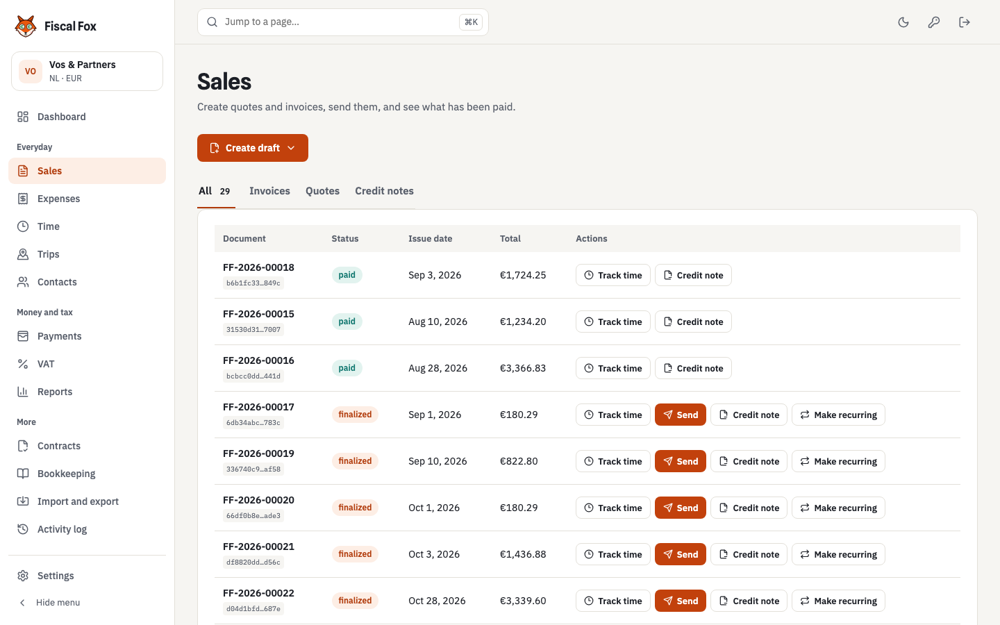
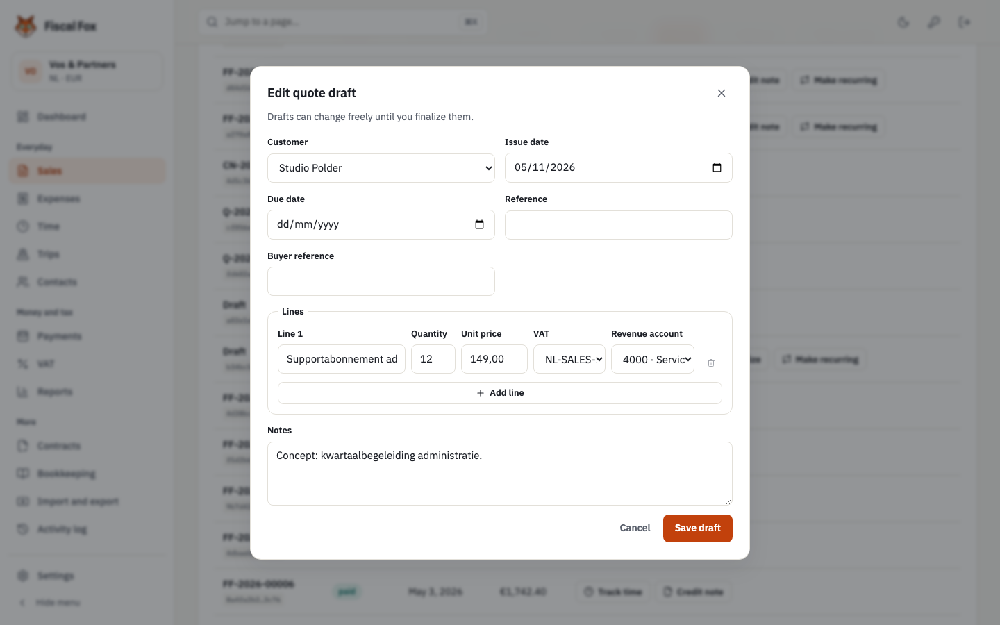

Sales
Sales is where you create quotes and invoices, send them, and follow them until they are paid.

Use the tabs above the list to show All documents, Invoices, Quotes, or Credit notes. The buttons in each row depend on the document's status.
Create a quote or invoice
- Open Create draft.
- Choose the Document type (Invoice or Quote) and the Customer. If the customer does not exist yet, type the name and pick Add "name" to create a draft contact.
- Check the Issue date (today by default) and add a Due date, Reference, or Buyer reference if needed. The buyer reference is the customer's own order or cost-centre reference.
- Fill in the first line: pick a Catalog item to prefill it, or type the Line description, Quantity, and Unit price. Choose the Tax code and Revenue account.
- Select Save draft.
Edit a draft

Drafts can change freely until you finalize them. Edit opens the full editor, where you can change the customer, dates, and references, Add line or remove lines, and add Notes.
Document lifecycle
| Status | Meaning |
|---|---|
draft | Editable. Not in the books yet. |
finalized | Numbered and locked. An invoice is posted to the books. |
sent, viewed | Delivered to the customer by email, and opened. |
accepted, rejected, expired | A quote's outcome. |
partially-paid, paid, overdue | An invoice's payment state. |
void | Cancelled. |
Finalize numbers the document, freezes its content, and prepares its files in the background: a PDF for quotes, and a PDF plus a UBL e-invoice for invoices and credit notes. Fiscal Fox refuses to finalize when:
- the customer is still a draft contact;
- an invoice or credit note has no Peppol electronic address for the customer (or a Dutch KvK number from which one is derived);
- an invoice or credit note has intra-EU VAT lines without a supply date (or invoice period) and a delivery country.
After finalizing, corrections go through a credit note instead of an edit.
Row actions
- Send emails the document. Confirm the contact's invoice email or choose Send to another address. The button then reads Send queued while the email goes out in the background.
- Convert to invoice turns an accepted quote into an invoice.
- Credit note creates a credit note for an invoice that is not a draft or void.
- Reminder schedules a payment reminder for a sent, viewed, partially paid, or overdue invoice at the date and time you choose. It is only sent if the invoice is still open.
- Make recurring repeats a draft or finalized invoice Monthly, Quarterly, or Yearly. Every sets the interval (2 with monthly means every other month) and First run sets when it starts.
- Track time opens Time with the invoice linked, so logged hours are tied to it.
What the customer sees
A sent quote links to a public page where the customer reviews the lines and totals, enters their name and email, and selects Accept or Reject (with an optional note). The decision is time-stamped and attached to the immutable quote version.
When Stripe is set up, customers can pay invoices online by card.
Who can do this
Owners, admins, and members create and send documents. Accountants and viewers see the list read-only. See Roles.